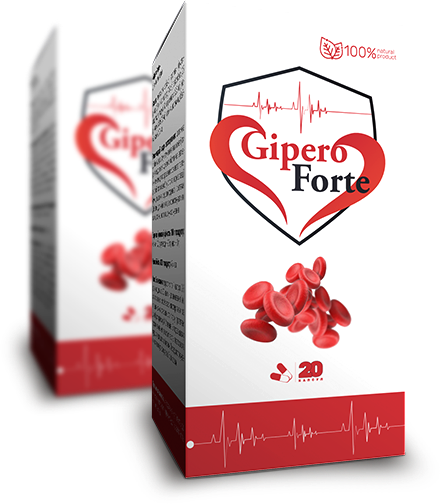

Здоровое сердце и крепкие сосуды с
GiperoForte

 Улучшает системный кровоток
Снижает показатели артериального давления
Оказывает успокаивающее действие
Имеет легкое мочегонное действие
Улучшает системный кровоток
Снижает показатели артериального давления
Оказывает успокаивающее действие
Имеет легкое мочегонное действие